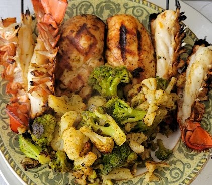

The Art of Meal Prepping: How to Plan, Cook, and Store Meals for a Healthier Lifestyle
In today's fast-paced world, it's easy to get caught up in the hustle and bustle of daily life and neglect our health. However, maintaining a healthy lifestyle is essential for overall wellbeing, and a crucial aspect of this is healthy eating. Meal prepping is a simple yet effective way to ensure you eat nutritious meals that fuel your body throughout the week. In this article, we will delve into the art of meal prepping, covering how to plan, cook, and store meals for a healthier lifestyle.

- Meal planning: The first step to successful meal prepping is to plan your meals in advance. Take some time at the start of each week to decide what meals you want to eat and create a grocery list accordingly. This will save you time and money and ensure you have all the necessary ingredients on hand.
- Meal prepping tools: Invest in some good quality meal prep containers that are microwave and dishwasher safe. This will make storing and reheating your meals a breeze. Also, invest in a food scale to measure portions accurately and a good quality knife to make meal prep easier and safer.
- Recipes: Look for healthy, easy-to-make recipes that you enjoy. There are many resources available online, including blogs, websites, and social media, that provide healthy meal ideas and inspiration. Incorporate a variety of protein, complex carbohydrates, and healthy fats into your meals for balanced nutrition.
- Cooking techniques: Use healthy cooking techniques such as grilling, baking, and roasting to reduce the use of oil and unhealthy fats. Additionally, incorporate herbs and spices for flavor instead of relying on salt or sugary sauces.
- Batch cooking: Cook in batches to save time and ensure you have enough meals for the week. This is particularly useful for proteins such as chicken or fish, which can be cooked in bulk and used in multiple meals.
- Portion control: Use your food scale to portion out your meals accurately. This will ensure you are consuming the correct amount of calories and nutrients.
- Storage: Once your meals are cooked, store them in your meal prep containers and label them with the date and contents. Store them in the refrigerator or freezer, depending on how long you plan to keep them.
- Meal prepping for special diets: If you have special dietary requirements, such as vegetarian, vegan, or gluten-free, there are many resources available that provide healthy meal ideas and recipes tailored to your needs.
- Snacks: Don't forget to include healthy snacks in your meal prep. This will help curb cravings and keep you satiated between meals. Examples include fresh fruit, raw vegetables, and hummus.
- Hydration: Lastly, don't forget to hydrate. Drinking enough water throughout the day is crucial for overall health and wellbeing. Invest in a reusable water bottle and aim to drink at least 8 glasses of water a day.
In conclusion, meal prepping is an excellent way to ensure you eat healthy, nutritious meals that fuel your body throughout the week. By following these tips and incorporating a variety of healthy foods into your meal plan, you can achieve a healthier lifestyle and feel your best. Start meal prepping today and see the positive impact it can have on your health and wellbeing.